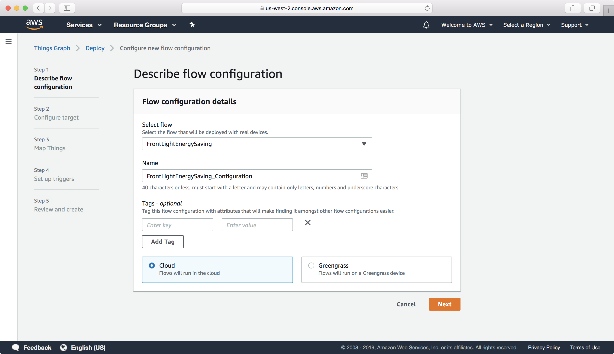
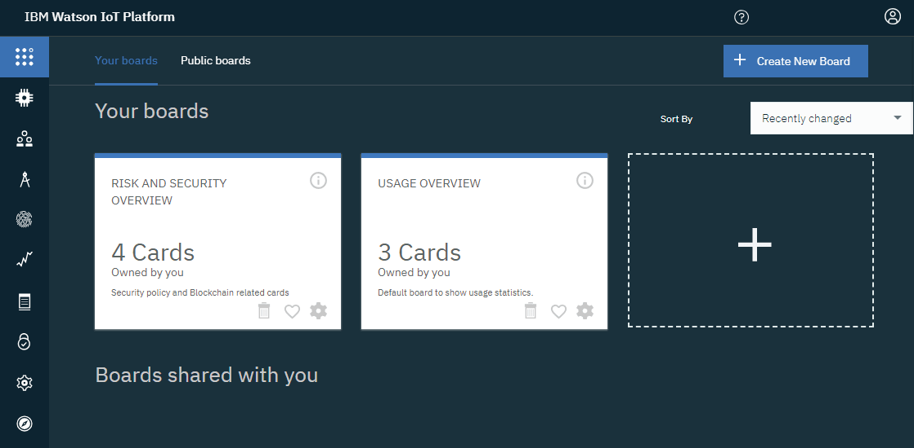
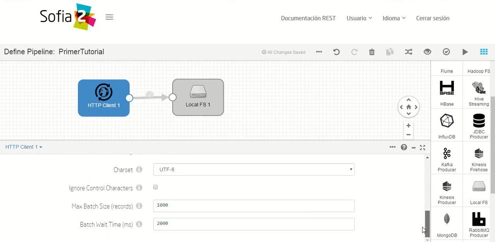

En la Agricultura

En la Medicina

El Internet de las cosas (IoT) es el proceso que permite conectar elementos físicos cotidianos al Internet: desde objetos domésticos comunes, como las bombillas de luz, hasta recursos para la atención de la salud, como los dispositivos médicos; también abarca prendas y accesorios personales inteligentes e incluso los sistemas de las ciudades inteligentes.
El término IoT hace referencia a todos los sistemas de dispositivos
físicos que reciben y transfieren datos a través de redes
inalámbricas con intervención humana mínima, lo cual es posible
gracias a la integración de dispositivos informáticos en todo tipo
de objetos.
Por ejemplo, un termostato inteligente (es decir, que utiliza
el IoT) recibe datos de la ubicación de su automóvil inteligente
mientras conduce para ajustar la temperatura de su casa antes de que
llegue. Todo esto se logra sin su intervención e incluso ofrece un
mejor resultado que si lo hiciera de forma manual.
Piense en el ejemplo del hogar inteligente. Para predecir el momento
ideal en el cual controlar el termostato antes de que usted llegue a
casa, el sistema de IoT puede conectarse a la
API
de Google Maps y, de este modo, obtener información actual sobre el
tráfico en el área. Además, puede utilizar los datos a largo plazo
que recopila el automóvil para conocer sus hábitos de conducción.
Por otra parte, las empresas de servicios públicos tienen la
posibilidad de analizar los datos de IoT de los clientes con
termostatos inteligentes para optimizar el sistema a gran escala.
| # | Azure IoT Hub | AWS IoT | Watson IoT Platform | Sofia2 IoT Platform |
|---|---|---|---|---|
| Protocolos | HTTP, AMQP, MQTT y protocolos a medida usando Protocol Gateway | HTTP, MQTT | HTTP, MQTT | HTTP, MQTT, AMQP, JMS, OPC y protocolos a medida vía Gateway Plugin |
| Patrones de comunicación | Telemetry, Command | |||
| Plataformas certificadas | .Net y UWP, Java, C, NodeJS | C, NodeJS, Javascript, Arduino, Java, Python, iOS, Android | C#, C, Python, Java, NodeJS | Java, Javascript, C, NodeJS, iOS, Android, Python, .Net, Arduino |
| Seguridad | TLS (Server Authentication) | TLS (Mutual Authentication) | TLS | TLS |
| Autenticación | Por dispositivos con SAS token | Certificicado X.509 con autenticación cliente, IAM Service, Cognito Service | Per-device con token | Per-device/system con token, certificado X509, user/password |
| Precio | Pago por unidad IoT Hub según número de dispositivos y mensajes por días | Pago por tráfico en millones de mensajes (publicados de dispositivos y entregados a dispositivos) | Pago por número de dispositivos, tráfico de datos y almacenamiento | Modo SaaS: pago por tráfico de datos y almacenamiento. Modo PaaS: pago por VMs. |
| Interfaz |  |  |  | |